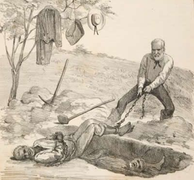
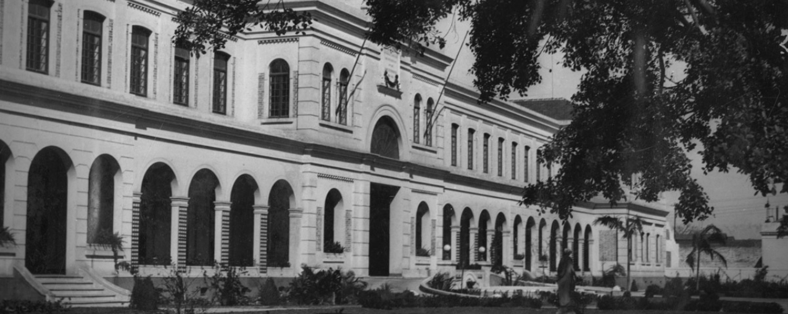
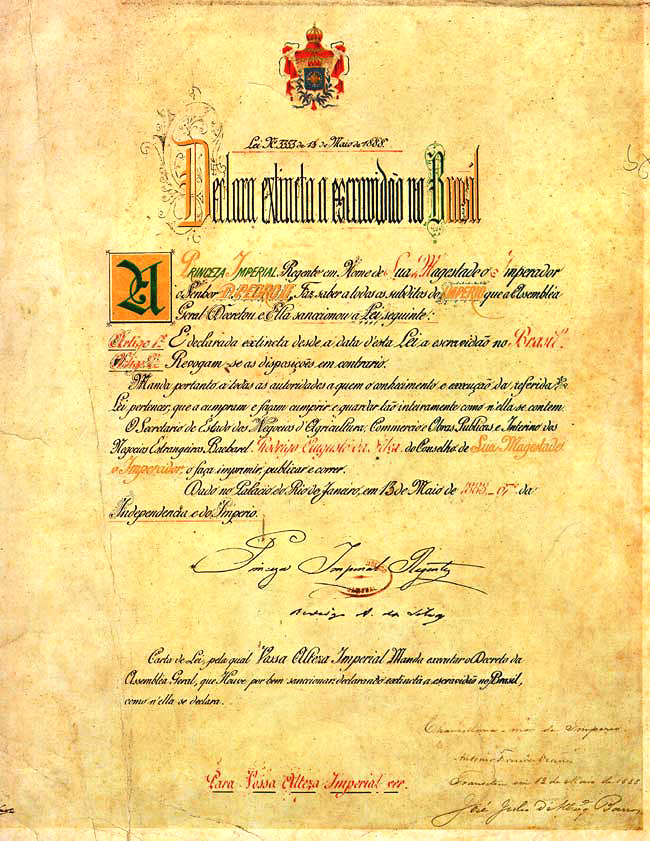
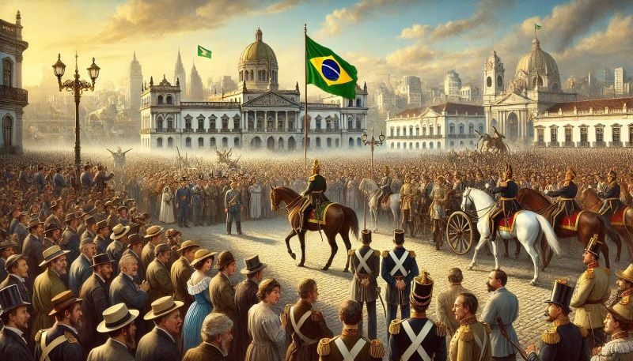

Década de 1880

Lei dos Sexagenários
A Lei dos Sexagenários foi uma importante lei abolicionista aprovada no Brasil em 28 de setembro de 1885. Ela concedia liberdade a todos os escravos com mais de 60 anos de idade, marcando um passo significativo na trajetória que levaria à abolição total da escravatura no país. A lei, no entanto, foi altamente controversa, pois, na prática, sua aplicação era muito limitada. Isso porque a expectativa de vida dos escravos na época era muito baixa, devido às péssimas condições de saúde, os abusos sofridos e o trabalho extremamente extenuante nas plantações e fazendas. Além disso, muitos escravos com mais de 60 anos já haviam falecido devido ao desgaste físico e emocional causado pela vida de exploração. Ou seja, poucos eram os escravos que conseguiam atingir essa idade. Para muitos, a lei representava mais uma medida simbólica do que uma verdadeira mudança no sistema escravocrata. A Lei dos Sexagenários foi um dos últimos esforços do Império para lidar com a questão da escravidão de forma gradual, antes da Abolição da Escravatura.

Hospedaria de Imigrantes
Inaugurada em 1887, a Hospedaria de Imigrantes foi a primeira morada paulistana de milhares de estrangeiros e brasileiros de outros estados que escolheram viver em São Paulo. Suas principais funções eram acolher e encaminhar os imigrantes aos novos empregos. Contudo, as condições nas hospedarias nem sempre eram ideais. Havia superlotação, falta de higiene e alimentação precária, o que refletia a dificuldade do governo em lidar com o grande número de imigrantes que chegava. Ainda assim, as hospedarias para imigrantes representaram um marco no processo de colonização e no movimento de imigração para o Brasil durante o século XIX.

Lei Áurea
A Lei Áurea foi a lei que determinou a abolição da escravatura no Brasil, em 13 de maio de 1888. Por meio dessa lei, mais de 700 mil escravizados conquistaram sua liberdade, e seus antigos donos não receberam nenhuma indenização do Estado brasileiro. A responsável por assinar esse documento foi a princesa Isabel, na época, herdeira do trono. A abolição do trabalho escravizado foi resultado da mobilização do movimento abolicionista, da sociedade brasileira e dos escravizados. A década de 1880 presenciou uma grande mobilização política, jurídica e social em defesa da abolição. Os ex-escravizados, no entanto, não receberam nenhum tipo de incentivo do governo após essa lei.

Proclamação da república
A Proclamação da República foi um evento histórico que aconteceu no dia 15 de novembro de 1889, no Rio de Janeiro, e marcou o fim da monarquia no Brasil e o início da república. Foi resultado de um golpe militar liderado pelo marechal Deodoro da Fonseca, que depôs o imperador Dom Pedro II, encerrando o regime monárquico no Brasil e instaurando a República. O movimento foi impulsionado por descontentamentos com a monarquia, como a insatisfação dos militares, o impacto da Abolição da Escravatura de 1888 e crises políticas e econômicas. Com a mudança, o Brasil adotou um sistema republicano, inicialmente marcado pela influência militar e por uma república federativa, mas a transição não resultou em uma democratização imediata, mantendo o poder nas mãos das elites e militares nas primeiras décadas.